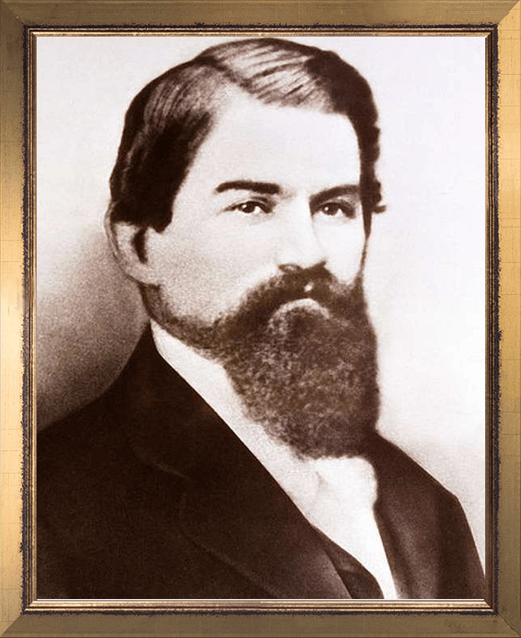
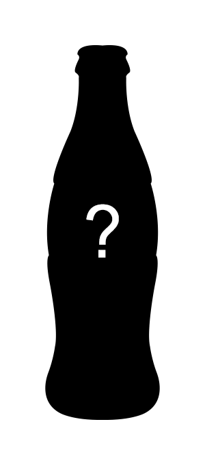
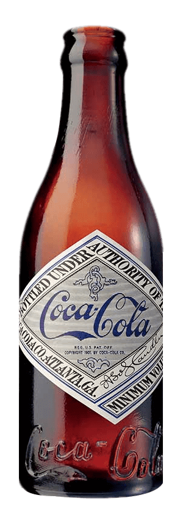
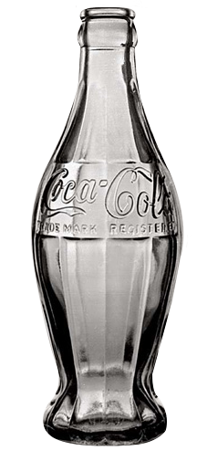
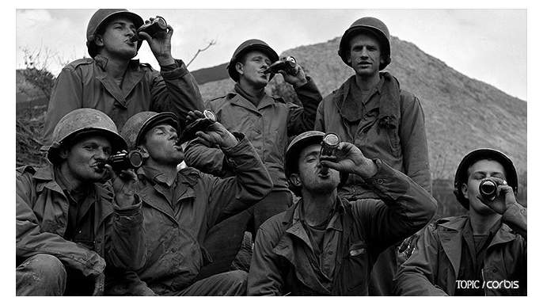
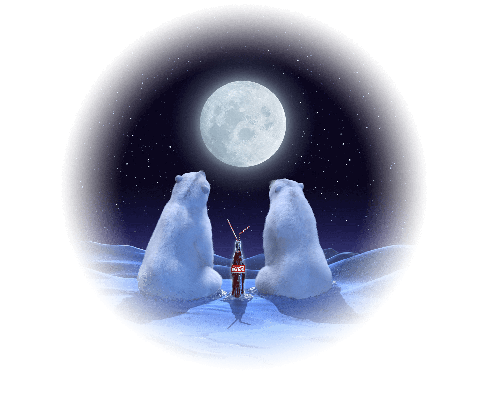

Dr. John Pemberton sold a mix of coca leaf extract
and cola
nuts and syrup to a pharmacy in Atlanta,
Georgia, U.S.Back
then, a pharmacy worker named
Coca-Cola after matching two
'C' characters.


Asa Candler founded the Coca-Cola Company in 1892
with former
partner Frank Robinson of John Pemberton.
he put it in a bottle and made it portable anywhere.

A copy of the Coca Cola brand was circulating, so Coca-Cola
studied
its unique bottle shape. They changed the shape of
the bottle
so that people could identify the real Coca-Cola.
Coca-Cola, which was studying ways to increase its
consumption
of beverages in winter, requested the
development of a mascot
suitable for winter. It symbolized
the red color and fresh
bubbles used in the Coca Cola logo.

During World War II, many Europeans first came
into contact
with Coca-Cola and when the war ended,
its sales network
expanded to all parts of Europe.
Coca-Cola has grown rapidly around the world every year,
expanding
its sales network to a number of countries
besides Cambodia,
Montreal, Paraguay, Macau and Turkey.
Coca-Cola has launched a
new beverage brand.

In 2011, Coca-Cola Company joined hands with
the World
Wildlife Fund (WWF) to launch a campaign
to save the polar
bear, Coca-Cola's mascot.